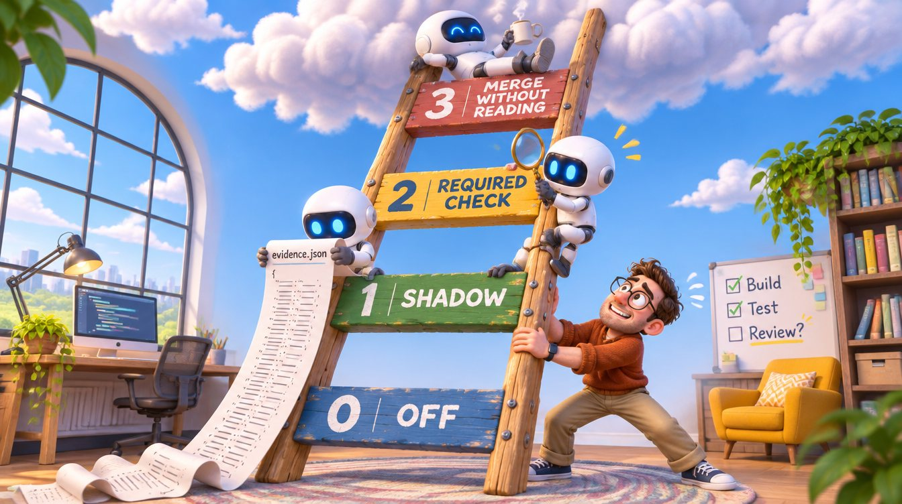

Earning the Next Rung
Building58 is my self-building office, a team of Claude Code sessions that writes its own tickets, builds them, reviews each pull request and merges on Autopilot. Every pull request there still waits for a reviewer session to read the code. I want some kinds of change to merge with nobody reading them, but only when the evidence shows that is safe.
So the office is building a tool for itself, which I call Exhibit. For each pull request, Exhibit decides what evidence the change needs and checks it. Its first full run on Building58's history read 146 merged pull requests and traced 20 bugs that got through back to the pull requests that added them. In its first afternoon in shadow mode, it passed 11 commits that the reviewer sent back, so nothing merges on its verdict yet.
Three ideas guide the design. Exhibit learns what evidence each kind of change needs from the bugs that got through. It measures how strong that evidence is instead of trusting a green check. And each kind of change goes up the trust ladder on its own, when its own numbers say so. This post describes that design, which is the target the office is building toward, and the first real numbers.
Building58 is a toy project with one user, so the numbers say more about the method than about what would be safe at a company.

Reading every diff does not scale
Lauren Tan describes a trust ladder for coding agents: agents get more as verification proves them, and near the top they merge their own pull requests while a person samples them after they land. I wrote about it in Who Owns the Process?
Building58 was most of the way up that ladder. As I described in The Office Builds Itself, a PM session writes tickets, Dev sessions build them, and Autopilot starts the tickets I approve and merges a pull request once a reviewer session gives it a merge verdict. But every pull request still waited for a model to read the diff, and that reviewer was the same model that wrote the code. It found real bugs and cost tokens and review rounds, and nothing measured what it missed.
I also had a reason outside the office. As I work more on Autopilot and try to translate it into actual enterprise-grade projects, I need to put more maturity around the trust ladder.
So I changed the question from whether the code is good to whether the evidence is strong enough that nobody has to read the code. The Claude Code team describes the same move in how it thinks about verification: the person stops reading every diff, says what done looks like, and reviews the evidence.
The office built it for itself
Building58 has matured and stabilized, and it can now recover on its own from many different failure modes. I am surprised how many there have been. So I wanted to give it a real project and see how it would do.
I wanted the end users to be developers, and I looked for a project that would be useful to Building58 but could also stand alone, one I could use in my own development. I also wanted the Building58 developers to iterate on it while they use it, so the product can grow and mature on its own. Exhibit was that project.
The building has several rooms, each a separate copy of the office with its own sessions and its own Board. Room C builds Exhibit. The plan is for the Building58 room to run it on every pull request to the office's own code, and for Room B to run it on edd-platform, an eval tool of mine.
The user rooms will install published releases only, so they hit the bugs any user would, and they will file issues when a session fights the tool. The first release, v0.1.0, came out on November 20.
Room C is building it from a spec in nine slices, and five were done by the third day.
Learn the rules from the bugs that got through
Exhibit runs as one loop. It learns a policy from history, checks each new pull request against it, and sends any bug that gets through back into the history.
The history starts with the fixes. Exhibit traces each fix back to the pull request that added the bug with SZZ, named for the authors of the 2005 paper behind it: run git blame on the lines the fix changed, and see which earlier change wrote them. A bug found that way is an escaped defect.
A common mistake is to trust titles and labels to find the fixes. On Building58, a bug label, a title that starts with "fix", a fix/ branch and a revert together found 2 fixes in 146 merged pull requests, and one of them was a change of process, not a bug. The workers name a pull request for its symptom, such as "T-170: tasks.test.js can hang in CI". So the fixes are named by hand in evidence.yml, with signals such as pr:129. With a list of 33, the first full run found 34 fixes and traced 20 of them to the pull requests that added the bug. Most fixes with no link changed code from the office's first commit, which came before the repo used pull requests.
Exhibit's own repo has the same problem. Its titles start with a ticket number, such as "147: ...", and a number alone is not a ticket key. So none of the first 15 pull requests that Exhibit checked counted as a fix, and the check for a test that failed before never ran (ticket 233).
Then comes error analysis, the same method I teach for LLM evals. Claude drafts a short code for each defect, I keep or change it, and the codes group into categories. SZZ gets some links wrong, mostly where code was only moved, so I can also reject a link while I label.
A category becomes a rule only when it appears in at least two pull requests and its trigger can be read from a diff. Agents try to disprove it first, and I approve it in a pull request like any other change.
| Example category | Rule in the policy | Kind of change |
|---|---|---|
| The restart path was never run | A restart run, with its log | relay-core |
| Visible only in the browser | A screenshot or a short clip | office-visual |
| The test checked the wrong thing | A floor on the mutation catch rate | All kinds |
Worked with fakes, failed with the real gh or git | A contract test against the real tool | ticket-store |
| The manual was out of date | A link check and a plain-words check | manual |
Ask each kind of change for its own evidence
A docs fix and a relay change carry different risk, so they need different evidence. The rules live in the repo as evidence.yml. Each kind of change has a trigger read from the diff, the evidence it needs, and the escaped defects the rule came from, and Exhibit runs only the rules whose triggers match.
# evidence.yml, an example for Building58
kinds:
relay-core:
match: [relay/supervisor.js, relay/session-host.js]
needs: [tests-before-after, restart-run, mutation: 0.85]
merge_without_reading: never
source: [D-004, D-011]
ticket-store:
match: ["relay/ticket-stores/**"]
needs: [contract-test, mutation: 0.80]
merge_without_reading: allowed
source: [D-019, D-027]
manual:
match: ["docs/manual/**"]
needs: [link-check, plain-words]
merge_without_reading: allowed
source: [D-031, D-040]
default:
needs: [tests-before-after, mutation: 0.70]exhibit check gives each pull request one of two verdicts. "Meets policy" means every requirement was met. "Needs a person" lists each gap, the rule behind it and how to close it, so a reviewer can see why the pull request stopped without working it out from the diff. If Exhibit itself fails, the verdict is an error, and an error never passes.
The strongest evidence comes from running the change. Tests run on the base and the head, and a test that failed before and passes after shows that the change fixed something. For the relay, the policy asks for a real restart of the program, because two bugs that stalled the office were in the restart path. For the office page, it asks for a screenshot.
A pull request can match more than one kind. Then it needs the evidence of every kind it matches, and it can skip the reviewer only when every one of those kinds allows it. On Exhibit's own repo that is the usual case. Of the first 15 pull requests Exhibit checked there, only one matched a single kind, and 9 matched docs, source and tooling together, because a code change comes with its tests and the house rules ask it to update the spec in the same pull request. A docs kind at rung 3 would almost never apply there. Building58 is the same. In the first history run, with kinds drawn by folder, 140 of its 146 pull requests touched the relay and 108 touched the docs. So a kind as wide as a folder covers almost every pull request, and a useful kind has to be narrower, like relay-core in the example above.
Measure the tests, not only whether they pass
A weak test passes too, so a passing test is weak evidence on its own. Exhibit plants small bugs in the lines the pull request changed, such as > made into >=, and runs the tests again. The share of planted bugs the tests catch is the catch rate, the true positive rate of the tests for that change, and the same number I use to check an LLM judge in Can You Trust Your Judge's Score? Google has run mutation testing this way, on changed code during code review, for years.
The room's reviewer sessions already do this by hand. In pull request 252, a new test was meant to show that a guard for the repo "shop" leaves the repo "shopping" alone. In a scratch copy, the reviewer made the guard wrong in the way the ticket warned about, and the test still passed, so the test could not fail. Exhibit had said "meets policy" on that commit, because all 621 tests passed. Mutation on the changed lines makes this kind of check on every pull request, with no person.
Mutation runs only on the changed lines and stops at a time budget. When the budget runs out, Exhibit reports the catch rate with its interval, and too few mutants means "needs a person".
Exhibit also records who wrote each check. A test the Dev wrote can share the Dev's blind spots, so a hidden suite that the Dev cannot see or change counts for more.
Keep the rules out of reach of the change
A pull request must not be able to change the rules that judge it. Exhibit reads evidence.yml from the base commit, never from the pull request, and any change to the policy needs a person.
A verdict counts only for the commit it checked, and Autopilot merges with --match-head-commit, so a later push sends the pull request back. The verdict that counts comes from CI, because a session can skip or change a run on its own machine.
CI also runs on every push to main, because two pull requests that each pass can still break main together. On the second day, the GraphQL change and the pr: signal merged eight minutes apart, and each had passed against the main it started from. Together they broke a test. The run on main caught it within minutes, and a fix merged 34 minutes later.
Prove the policy on history before trusting it
Exhibit tests the policy on pull requests it did not learn from. The backtest learns from the older pull requests and tests on the newer ones, and it counts how many escaped defects the policy would have caught.
The cost of a policy is its false demands, the evidence it asks for on pull requests that turn out fine. Exhibit measures them against clean pull requests of about the same size, because small changes pass easily and would make the policy look cheap.
Exhibit also counts what is lost at each step: the links SZZ found, the links I kept, the defects that became rules, and the defects check would have flagged. A canary job tests the policy live with pull requests that carry a planted bug, and Exhibit has to flag every one.
Start every gate in shadow mode
Each kind of change starts at the bottom of the ladder and moves up only when its own numbers say so. In shadow mode Exhibit gives its verdict and nothing waits on it, so I can read what it would have blocked before it blocks anything.
Exhibit began running in shadow mode on its own repo on November 20, and the first afternoon showed why this step comes first. Between 11:18 a.m. and 4:51 p.m. it checked 29 commits on 15 pull requests. Its policy then asked for the tests on the base and the head, and a link check on the docs. The table compares Exhibit's verdict on each commit with the room's review of the same commit. These values are real.
| Exhibit's verdict | Commits | Reviewer said merge | Reviewer said fix | No review |
|---|---|---|---|---|
| Meets policy | 24 | 12 | 11 | 1 |
| Needs a person | 5 | 1 | 3 | 1 |
The reviewer sent back 11 of the 23 reviewed commits that Exhibit passed, and 4 of those had a blocking finding. In pull request 249, all 616 tests passed, and the reviewer found five inputs where the new code read a quoted review as the comment's own verdict, which main had read correctly. None of the 5 "needs a person" verdicts found a real problem. Two came from early runs that matched no rule, two were changes to the policy, which always need a person, and one was a link check that failed because the script it runs was not on that branch yet.
So on that day, "the tests pass and the links work" was weaker evidence than the reviewer's reading, and nothing waited on Exhibit while that showed. Exhibit is not close to the step from 1 to 2, which needs its verdict to agree with the reviews. The run also showed what was missing: mutation was not built yet, and no fix signal matched the repo's own fixes. One afternoon on a repo that is still being built shows the gaps, not a rate.
The step from 2 to 3 needs a number I can defend. With no misses in n pull requests, the rule of three puts the 95% upper bound on the miss rate at about 3 divided by n, so 150 clean pull requests mean a miss rate that is probably below 2%. The bound does not prove the rate is zero, and I decide whether it is low enough for each kind.
| Kind of change | PRs | Misses | 95% upper bound | False demands | Rung |
|---|---|---|---|---|---|
| manual | 212 | 0 | 1.4% | 4% | 3 |
| ticket-store | 161 | 0 | 1.9% | 9% | 3 |
| default | 305 | 3 | 2.8% | 10% | 2 |
| office-visual | 138 | 2 | 5.1% | 12% | 2 |
| relay-core | 97 | 1 | 5.6% | 21% | 2, never 3 |
The values in this table are examples of what the report gives. The relay is set to never, because a bad change there takes down every session, including the ones that could fix it.
Before any kind reaches rung 3, Room B will make the verdict required while the Building58 room stays in shadow mode. Then I will compare the two rooms on review rounds per merged pull request, tokens per merged pull request and stuck time.
Stuck time is the failure I care about most, and a gate that blocks can cause it. So in enforce mode, a blocked pull request can still merge with a recorded skip: a label, and a reason in its body. The verdict stays "needs a person", and every skip is counted for its kind of change, so overuse shows.
At rung 3, Autopilot merges a pull request that meets the policy with no reviewer session, and it picks a random sample of those that I read without seeing the verdict. Only I turn on a rung, and Exhibit never merges anything itself.
Turn misses into rules, and remove rules that do not work
A policy miss is an escaped defect whose pull request Exhibit passed. When a fix merges, exhibit trace finds the pull request that added the bug, records its verdict, and sends a miss back into error analysis.
A rule that never catches anything but keeps asking for evidence costs every Dev time, so the backtest marks those rules and I remove them in a pull request.
Others are on the same ladder
Meta's RADAR decides which diffs can land with no human review, using eligibility rules, a learned risk score, an LLM review and deterministic checks. Meta reports more than 331,000 diffs landed with about a third of the revert rate of other diffs, though its paper describes no measure of test strength and no random sample of what landed.
The Autonomy Ladder guide Reading evidence instead of code covers mutation on changed files and moving classes of change up or down by evidence. The closest is the Claude Code team's post on verification, where several of Exhibit's rules came from. The spec's related-work section has the rest.
A toy project with one user
Meta's numbers come from production, and mine do not. Building58 and edd-platform are toy projects, and I am their only user. When a bug gets to main, I file a ticket. Nobody gets paged at 4 a.m., and no outage makes the news.
That is why I can turn on a rung after a few weeks of clean numbers, and it is also why my numbers do not carry over to a team with real users. What a 2% bound means depends on what a miss costs. At a company, the bound before rung 3 would have to be much smaller, each kind of change would need many more pull requests, and the misses would be counted next to reverts and incidents.
It was also a new project, and when I started I was not sure what the data would show. A lot of it was exploratory, to see whether it is useful at all.
What it does not do
Exhibit works only on GitHub. Every GitHub call goes through one forge module, so GitLab would be a second module behind the same methods, but nobody has built it. Exhibit also learns only from bugs that someone fixed, so the blind sample is my only way to find the rest.
A check is slow on a big test suite, because it runs the tests on the base and the head, and a third time for a fix. Building58's tests first ran one file at a time, and two runs took more than 72 minutes on a GitHub runner. With six files at a time, a real check took 17 minutes, and 24 minutes for a fix (pull request 239).
One model writes the code, the tests and the fixes, so the hidden suite and my sample are only a partial defense against shared blind spots. A policy belongs to one repo, which is why the field test planned two. The first run showed that edd-platform's history is too short to learn from: 112 pull requests in five days, 2 fixes and no linked bug. So Phase A uses Building58 alone for now. And what to build, the quality bar and the rungs themselves stay with me.
Exhibit is an MIT-licensed CLI and GitHub Action, and it needs no server. Claude only drafts what I confirm, and every command works without it.
Trying this on your own repo
- Run
exhibit historyin a clone of your repo and read the escaped-defects report. If it says the history is weak, count reverts as fixes or name a few fixes withpr:. - Label the escaped defects, and make a rule only from a category that shows up in at least two pull requests.
- Run
exhibit checkin shadow mode on every pull request for a few weeks, and read what it would have blocked. - Add mutation on the changed lines for one kind of change, with a tool such as Stryker, and compare its catch rate with what your reviewers find.
- Make the check required for that one kind, keep a blind sample, and skip the reviewer only when the bound fits what a miss costs you.
What's next
The constitution has two rungs left: a label that starts a ticket with nobody pressing Start, and a monitor that files tickets about what shipped. exhibit trace will do part of the second one. I also want to point Exhibit at a public repo with a long history and real users, where a miss costs more than a ticket.
References
- The Second Office's First User, the previous post
- Exhibit, its code, spec and explainer
- Building58, the office's code, and its constitution
- How the Claude Code team thinks about verification (2026)
- Automating Low-Risk Code Review at Meta: RADAR, Risk Calibration, and Review Efficiency (2026)
- Reading evidence instead of code, from the Autonomy Ladder guides
- Who Owns the Process?, on Lauren Tan's trust ladder
- LIVE: Poteto (creator of pstack) on shipping 1,000's of PR's a month at SpaceX, Matt Pocock with Lauren Tan, where Tan describes the trust ladder
- Can You Trust Your Judge's Score?, my primer on TPR and TNR for LLM judges
- When Do Changes Induce Fixes?, Śliwerski, Zimmermann and Zeller (2005), the SZZ paper
- If Nothing Goes Wrong, Is Everything All Right?, Hanley and Lippman-Hand (1983), the rule of three
- Practical Mutation Testing at Scale: A view from Google (2021)
- StrykerJS incremental mode, the mutation tool Exhibit runs on JavaScript repos